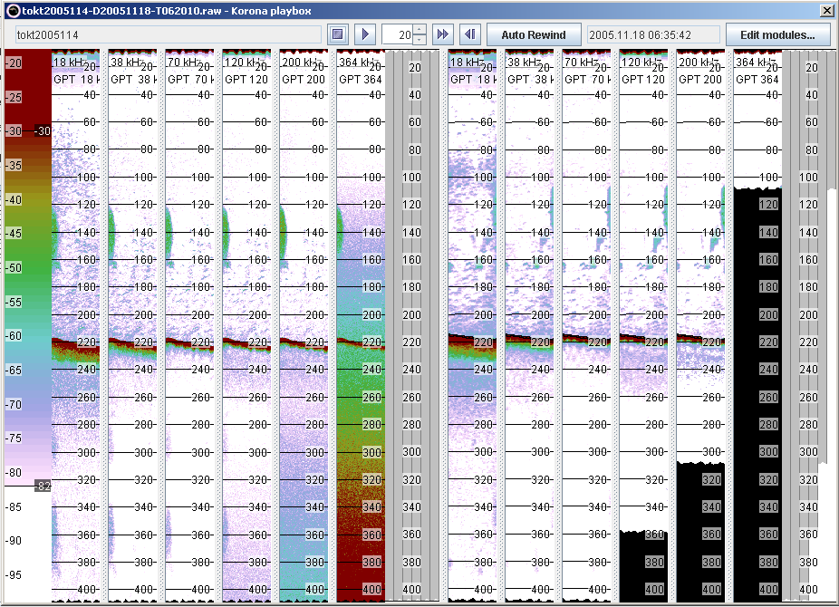

The processing setup is similar to Example 1, except that the DataReductionModule is inserted between the NoiseQuantificationModule and the NoiseRemovalModule. Note that the final result would be the same if the DataReductionModule was placed after the NoiseRemovalModule, but placing if before makes the processing go faster since time is not wasted in removing noise from data that is later removed.
Results are shown below: the left panel is original data for all 6 frequencies, the right panel is after data improvement and data reduction. Black colour means that there is no data.
